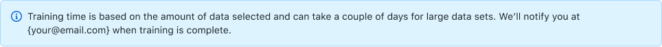

2024 / GitHub
Lead product designer
With product management,
engineering, and design peers
Working draft / v2
Copilot custom models
Helping enterprise admins choose what a model learns from, without becoming training experts.
I led design end to end, from limited-beta UI refinements to explorations for a more guided setup.

~ The whole experience
The difficult questions extended beyond starting training: which data to use, which controls were available, and how teams could monitor and adjust a model once developers began using it.
The configuration design brings those first decisions together. Admins could select repositories, narrow the files included, and choose whether to include collected prompts and suggestions before starting training.
In June 2024, I delivered UI polish for the limited beta. The frames here are design artifacts, not production captures.
~ Explaining the wait
We did not have a reliable completion estimate. Instead of offering false precision, the design explained what affected training time and how people would know it was finished.

Read the banner copy
Training time is based on the amount of data selected and can take a couple of days for large data sets. We’ll notify you at {your@email.com} when training is complete.
~ Two decisions, not one
Another important distinction was between permission to collect data at the organization level and the choice to include that data in an individual model. The inclusion control in the configuration screen addresses the second decision; it does not replace the organization policy.
Keeping those scopes separate mattered as much as the control itself. So did smaller details, like making the file-extension tokens consistent with Primer.
~ A starting point, not a blank slate
I explored suggested models as a way to help admins begin with a broad or more focused data set, then review it before training. Templates, repository guidance, and guided onboarding were later directions, not confirmed shipped features.
Suggested starting points